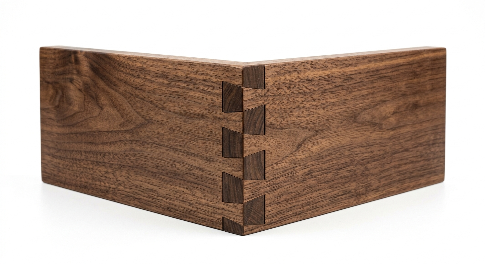
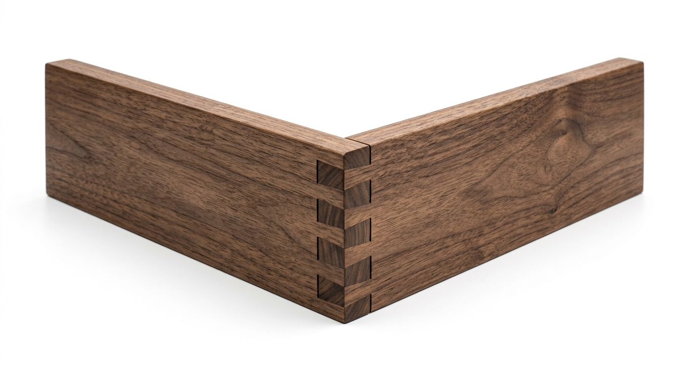
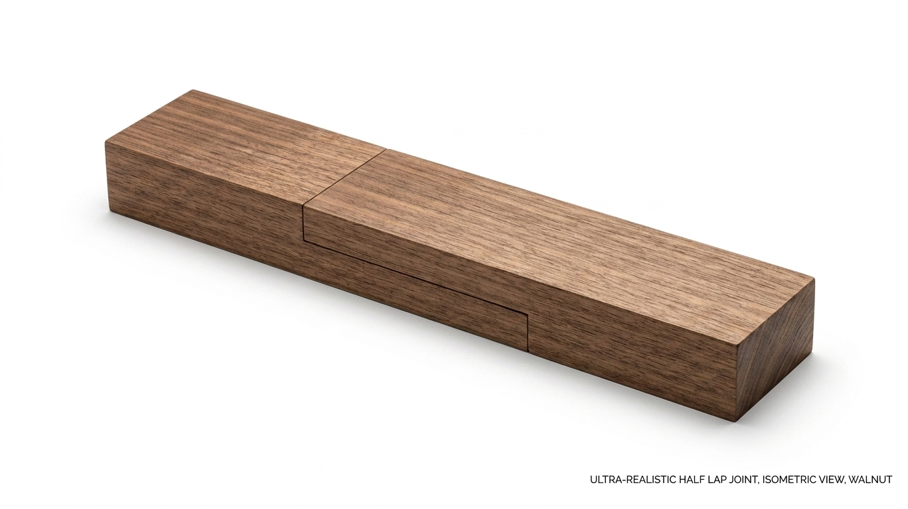
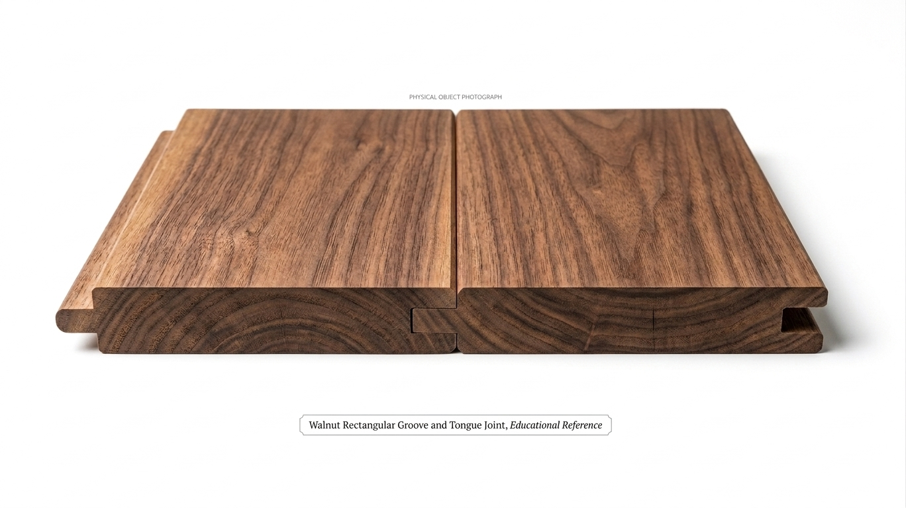

Tanggam Puting dan Lubang
MudahDigunakan untuk menyambung kaki meja, kerusi dan rangka perabot dengan sambungan yang kukuh.
Terokai anatomi dan cara pemasangan pelbagai jenis tanggam kayu melalui model 3D interaktif.
Seret untuk memutar model 360°. Skrol untuk zum. Pilih tanggam di bawah untuk menukar model.
Digunakan untuk menyambung kaki meja, kerusi dan rangka perabot dengan sambungan yang kukuh.

Tanggam Ekor Merpati`" alt="Tanggam Ekor Merpati">Memberikan kekuatan tinggi tanpa menggunakan skru atau paku dan banyak digunakan pada laci.

Tanggam Kotak`" alt="Tanggam Kotak">Digunakan untuk membina kotak, kabinet dan laci dengan sambungan bersudut tepat.

Tanggam Lekap`" alt="Tanggam Lekap">Menyambungkan dua kepingan kayu secara bertindih bagi meningkatkan keluasan sambungan.

Digunakan untuk menghasilkan sambungan bingkai yang kemas pada sudut 45 darjah.

Tanggam Lidah dan Alur`" alt="Tanggam Lidah dan Alur">Digunakan pada lantai kayu, panel dan dinding untuk sambungan yang kemas.

Membolehkan tiga batang kayu disambung pada satu titik untuk menghasilkan struktur kompleks.